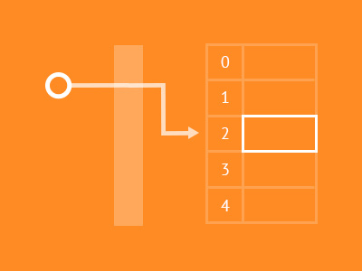
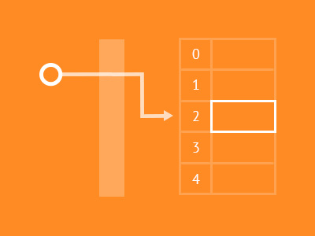
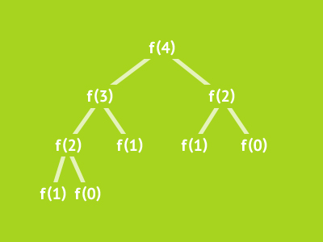
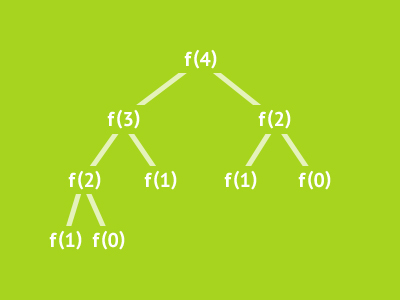

About VisuAlgo
Motivation
VisuAlgo was conceptualised in 2011 by Dr Steven Halim as a
tool to help his students better understand data structures and algorithms, by allowing them to learn the basics on their own and at
their own pace. VisuAlgo is like a 24/7 copy of himself. Together with some of his students from the National
University of Singapore (see the "Team"), a series of visualisations were developed and consolidated, from simple sorting
algorithms to complex graph data structures and algorithms, and also string+geometry algorithms.
VisuAlgo contains many advanced algorithms that are
discussed in Dr Steven Halim's book and beyond (Note: This 'Competitive
Programming 3' book is co-authored with his brother Dr Felix Halim). At this point of time, some of these advanced algorithms visualization/animation can only be found in
VisuAlgo. For example, in Graph Traversal
visualization, we do
not just discuss the standard Depth-First Search (DFS) and Breadth-First Search (BFS) algorithms, but also their variants, e.g.
the modifications of DFS for finding Articulation Points (Cut Vertex) and Bridges, Tarjan's and Kosaraju's DFS-like algorithms for
finding Strongly Connected Components (SCCs) of a directed graph, and we also have feature to visualize the implication graph of a
small 2-SAT(isfiablity) instance and check if the instance is satisfiable.
Though specifically designed for NUS students
taking various data structure and algorithm classes (e.g. CS1010, CS1020, CS2010, CS2020, CS3230, and CS3233), as
advocators of online learning, we hope that curious minds around the world
will find these visualisations useful as well.
Ongoing developments
VisuAlgo is an ongoing project and more complex
visualisations are still being developed. The following visualizations are next in line to be developed by our team:
Hash Table (using several hashing techniques), Jack Edmonds' Graph Matching algorithm, Chu-Liu Edmonds' algorithm for
Directed MST, etc.
However, the most exciting development is an automated
question generator and verifier (the online quiz system) that allows student to test their knowledge of basic data
structures and algorithms. The questions are randomly generated via some rules and students'
answers are instantly and automatically graded upon submission to our grading server. This online quiz system,
when it matures, should technically eliminate manual basic data structure and algorithm questions from typical
Computer Science examinations in many Universities. By setting a small (but non-zero) weightage on passing the online
quiz, a CS instructor can (significantly? -- to be proven after Dr Steven Halim finished this experiment with his
algorithm class this semester) increase his/her students mastery on these basic questions as the students have
virtually infinite number of training questions that can be verified instantly before they take the online quiz. To try this exciting online quiz feature,
click the "Start training!" button on the top right corner of this page.
Bug Reports or Request for New Features
VisuAlgo is not a finished project. Dr Steven Halim and
his team are still actively improving VisuAlgo. If you spot a bug in any of our visualization page/online quiz tool or
if you want to request for new features, please contact Dr "Steven Halim". His contact is the concatenation of his name and add gmail dot com.
Publications
This work has been presented briefly at the CLI Workshop at
the ACM ICPC World Finals 2012 (Poland, Warsaw) and at the IOI Conference at IOI 2012 (Sirmione-Montichiari, Italy).
You can click this link to read
our 2012 paper about this system (it was not yet called VisuAlgo back in 2012).
Frequently Asked Questions (Only in English)
The list below contains the answers to frequently asked
questions since this site went public in early August 2014:
- Q: VisuAlgo does not look nice on small screen
(e.g. smartphones). Will your team do something about
this?
A: No, we have decided to give up our past pursuit to optimize VisuAlgo for small screen due to the need to
cater many complex algorithm visualizations that require lots of pixels. The minimum resolution for respectable user
experience is 1024x768. We admit that it will be too painful to watch VisuAlgo animations on today's
smartphones (it is OK on tablets). Note that you also cannot do the click-and-drag gesture for graph drawing on
smartphones and tablets.
- Q: Are you going to make VisuAlgo an open-source project so that other developers can extend it, edit
certain visualizations to their liking, edit the language of the visualizations, etc?
A: Probably... We are still undecided about this. However, we have started the localization sub-project of the index.html of this site. If you are interested to translate various Computer Science terminologies to your native language,
please contact Steven. We are particularly interested with Spanish, Hindustani, Arabic, and French speakers :). We have also
written public notes about VisuAlgo in various languages: Chinese, Indonesian, Korean,
Vietnamese,
Thai (first link), and
Thai (second link).
- Q: As VisuAlgo (minus the online quiz system) is basically a collection of client-side HTML/CSS/JS files, can I
download all the required files locally so that I can use VisuAlgo without connecting to the Internet?
A: Go ahead, by doing so, you will have the offline copy of VisuAlgo :). If Internet connection in your place is
not that good, this can be a good idea. However, do revisit VisuAlgo (or re-download all files) once a while to get the
latest updates. We are still actively developing this tool. Note that VisuAlgo online quiz system is on server-side and
technically can never be on client-side to ensure fairness during online quiz. That feature will remain online by nature.
- Q: Can I download VisuAlgo files and host it locally on my own website verbatim?
A: BIG NO, this is plagiarism. If you want to extend/edit VisuAlgo (see point
no 2 above, please contact Dr Steven Halim first for permission). You can have a local copy of VisuAlgo (see point
no 3 above) but you cannot re-host the same set of files elsewhere.
- Q: I am a CS lecturer/instructor/student, can I use your VisuAlgo for my data structures and/or algorithms
class(es) (or the class(es) that I take)?
A: By all means, go ahead. We build this tool for all Computer Scientists on earth. If you like what
you see, we want you to tell the existence of VisuAlgo to other Computer Scientists that you know =).
If you have a Facebook, Twitter, or other social media account(s), go ahead and share the existance of VisuAlgo to your friends.
- Q: The training mode only contains
questions for 9 modules
(BST, AVL,
Heap, UFDS, Bitmask, Graph DS, Graph Traversal, MST, and SSSP). Are you planning to add more modules for the other visualizations?
A: Yes, we are planning to do that soon. The next modules in line are: Sorting, Linked List (and its variants), and likely Hash Tables (future visualization) to cater for the needs of NUS CS1020 module.
We also realize the importance of this component to provide holistic learning experience and we will therefore make this part multi-lingual too.
- Q: The test mode (and the answer to
last test)
buttons appear only occassionally. When they appear, I cannot access them as it asks for password. Is it normal?
A: Yes, this test mode is only for Dr Steven Halim's current CS2010 students (Aug-Nov 2014). You can
just access the training mode to access
similar set of random questions.
In the near future, we will open a 'lecturer mode' so that other CS lecturers worldwide can use this tool to administer online test for their students.
Acknowledgements (Only in English)
This project is made possible by the generous Teaching Enhancement Grant from NUS Centre for
Development of Teaching and Learning.


 



 
